Week 5
5.1 Exception Handling
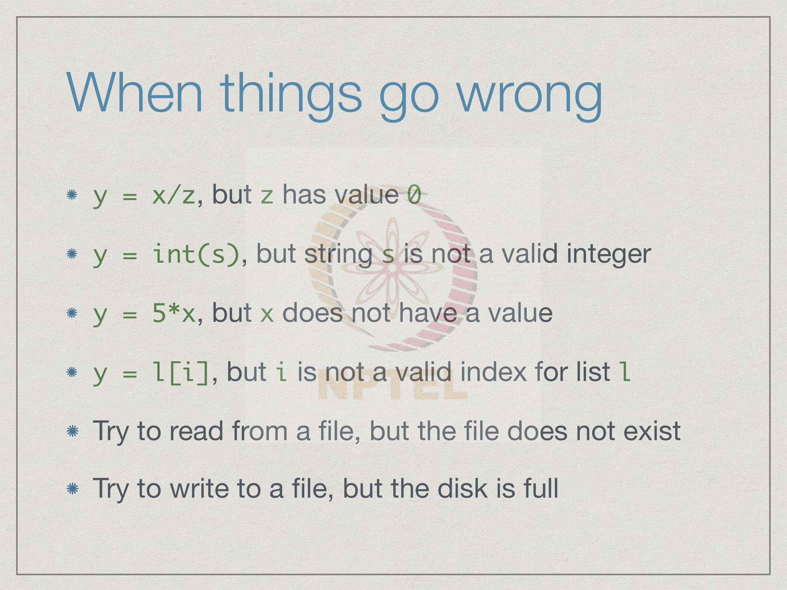Let us see what to do when things go wrong with our programs. Now there are many different kinds of things that can go wrong. For instance we might have an expression like x divided by z, and z has a value zero. So, this expression value cannot be computed, or we might be trying to convert something from a string to an integer where the string s is not a valid representation of an integer. We could also be trying to compute an expression, using a name whose value has not been defined, or we could try to index a position in a list which does not exist. As we go forward we will be looking at how to read and write from files on the disc. So, we may be trying to read from a file, but perhaps there is no such file or we may be trying to write to a file, but the disc is actually full. So, there are many situations in which while our program is running we might encounter an error.
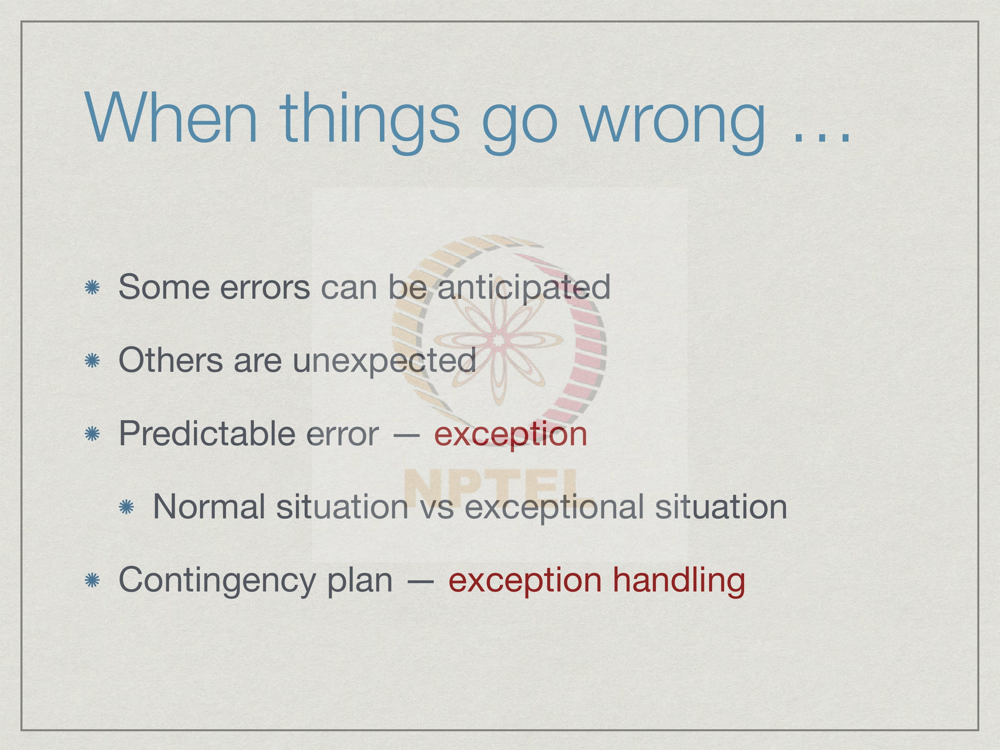Some of these errors can be anticipated whereas, others are unexpected. If we can anticipate an error we would prefer to think of it not as an error, but as an exception. So, think of the word exceptional. We encounter a normal situation, the way we would like our program to run and then occasionally we might encounter an exceptional situation, where something wrong happens and what we would like to do is provide a plan, on how to deal with this exceptional situation and this is called exception handling.
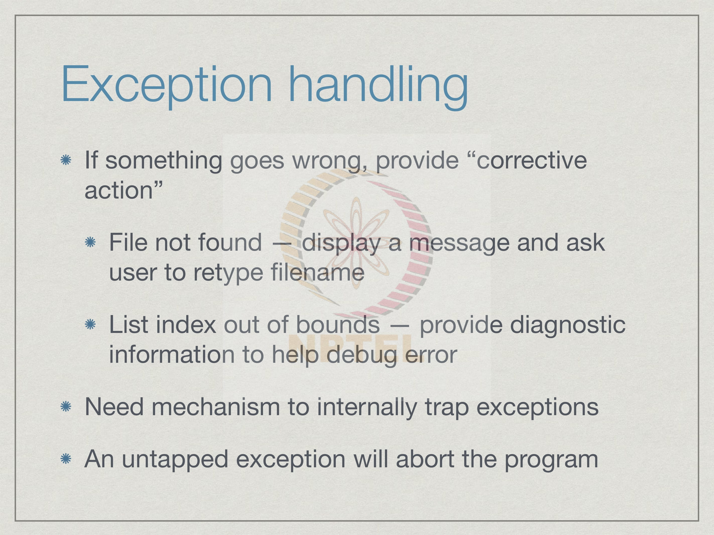So, exception handling may ask, when something goes wrong how do we provide corrective action. Now the type of corrective action could depend on what type of error it is. If for instance we are trying to read a file and the file does not exist perhaps we had asked the user to type a file name. So, you could display a message and ask the user to retype the file name, saying the file asked for does not exist. On the other hand if a list is being indexed out of bounds there is probably an error in our program, and we might want to print out this value the value of the index to try and diagnose what is going wrong with our program. Sometimes the error handling might just be debugging our error prone program. For all this what we require is a way of capturing these errors within the program as it is running without killing the program. So, as we have seen when we have spotted errors while we have been using the interpreter if an error does happen and we do not trap it in this way then the program will actually abort and exit. So, we want a way to catch the error and deal with it without aborting the program.
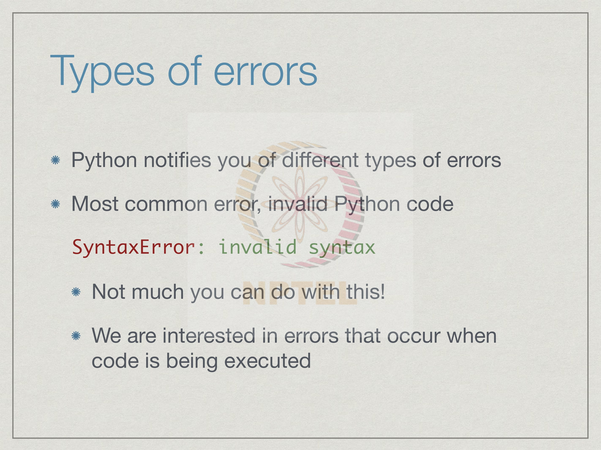
Now, there are many different types of errors and some of these we have seen, but we
may not have noticed the subtelty of these for example, when we run python and we type
something which is wrong, then we get something called a syntax error and the message
that python gives us is syntax error invalid syntax.
For example, supposing we try to create a list and by mistake we use a semicolon instead
of a comma.Then immediately python points to that semicolon and says this is a syntax
error it is invalid python syntax.
Of course, if we have invalid syntax; that means, the program is not going to run at all
and there is not much we can do. So, what we are really interested in is errors that
happen in valid programs. The program is syntactically correct it is something that the
python interpreter can execute, but while the code is being executed some error happens.
These are what are called run time errors these are errors that happen while the program
is running and here again we have seen these errors and they come with some diagnostic
information. For instance, if we use a name whose value is undefined then we get a
message from python that the name is not defined and we also get a code at the
beginning of the line saying this is a name error.
This is python's way of telling us what type of error it is similarly, if we have an
arithmetic expression where we end up dividing by a value 0 then, we will get something
called a zero division error and finally, if you try to index a list outside its range then we
get something called an index error.
Let us look at all this error. Just be sure that we understand. Supposing we say y is equal
to 5 times x and we have not define anything for x then, it gives us an index error a name
error and it says clearly that, the name x is not defined.
On the other hand, if we say is equal to 5 divided by 0 then we get a 0 division error and
along with the message division by 0 and finally, if we have a list say 1, 2 and then we
ask for the position three then it will say that there is no position three in this list. So, this
is an index error. So, these are three examples of the types of error that the python
interpreter tells us and notice that there is an error name at the beginning index error
name error zero division error plus a diagnostic explanation after that.
Let us first quickly settle on some terminology. So, usually the act of signalling an error is called raising an exception. So, when the python interpreter detects an error it gives us information about this error and as we saw it comes in two parts, there is the type of the error give what kind of error it is. So, it is name error or an index error or a zero division error and. Secondly, there is some diagnostic information telling us where this error occurs. So, it is not enough to just tell us oh some value was not defined it tells us specifically the name x is not defined. This gives us some hint as to where the error might be now when, such an error is signaled by python what we would like to do is from within our program handle it right. So, we would like to anticipate and take corrective action based on the error type. So, we may not want to take the same type of action for every error type. That is why it is important to know whether it is a name error or an index error or something else. And depending on what the error is, we might take appropriate action for that type of error and finally, if we do get an error or an exception which we have not explicitly handled then the python interpreter has no option, but to abort the program. So, if we do not handle an exception if an exception is unhandled then aborts the execution aborts.
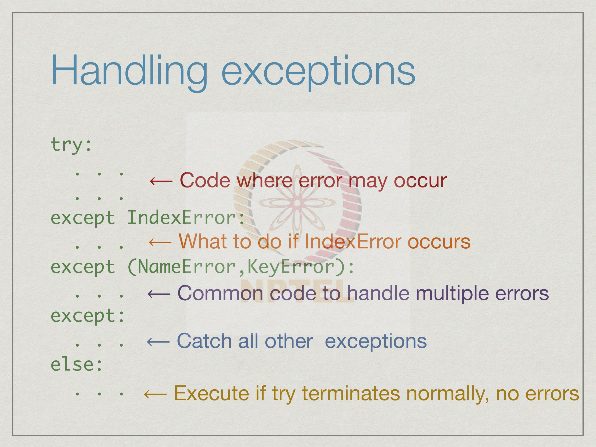
This is done using a new type of block which we have not seen before called try. So,
what we have is try block. So, when we have code, here in which we anticipate that there
may be some error we put it inside a try. This is our usual block of code where we
anticipate that something may go wrong and now we provide contingencies for all the
things that could go wrong depending on the type of error and this is provided using this
except statement. It says try this and if something goes wrong, then go to the appropriate
except one after the other.
The first one says what happens if an index error occurs. So, this is the code that happens
if an index error occurs on the other hand maybe I could get a name error or a key error
for both of which I do the same thing, so this is the next except block. So, you could
have as many except blocks as you have types of errors which you anticipate errors for it
is not obligatory to handle every kind of error, only those which you anticipate and of
course, now you might want to do something in general for all errors that you do not
anticipate. So, you can have a pure except block.
So, kind of a naked except block in which you do not specify the type of error and by
default such an except statement would catch all other exceptions. The important thing to
remember is that this happens in sequence. If I have three errors for example, if I have an
index error and a name error and a zero division error then, what will happen - is that, it
will first go here and find that there is an index error. This code will execute. The name
error code will not execute on the other hand, if I had only a name error and if I had a
zero division error for example, then because there is a name error first it will first it will
come here and will find that there is no index error then will come here and say there is a
name error and will execute this code.
The zero division error will not be explicitly handled, the program will not abort, but
there will be no code executed for the zero division error; it is not that it tries each one of
these in turn it will try whichever except matches the error and it will skip the rest. So,
finally, if I had only a zero division error in this particular example then, since it is not an
index error and it is not a name error, it would try to go through these in turns that would
come here find this is not a type of error. It is not a type of error and it will go to the
default except statement and catch all other exceptions.
Finally, python offers us a very useful alternative clause called else. So, this else is in the
same spirit as the else associated with a 'for' or a 'while' remember that a for or a while
that does not break that terminates normally then executes the else if there is a break the
else is skipped in the same way, if the try executes normally that is there is no error
which is found then the else will execute otherwise the else is skipped right.
So, we have an else block which will execute if the try terminates normally with no
errors. This is the overall structure of how we handle exceptions we put the code that we
want inside a try block then we have a sequence of except blocks which catch different
types of exceptions we can catch more than one type of exception by putting a sequence
in a tuple of exceptions, we can have a default except with no name associated with it to
catch all un other exceptions which are not handled and finally, we have an else which
will execute if the try terminates normally.
Now, while we normally use exception handling to deal with errors which we do not anticipate. We can actually use it to change our style of programming. So, let us look at a typical example. We saw recently that we can use dictionaries in python. So, dictionaries associate values with keys here we have two keys Dhawan and Kohli and with each key which is a name we have a list of scores. So, this score is a dictionary whose keys are strings and whose values are lists of numbers. Now suppose we want to add a score to this. The score is associated with a particular batsman b. So, we have a score s for a batsman b and we want to update this dictionary. Now there are two situations one is that we already have an entry for b in the dictionary in which case we want to append s to the existing list scores of b the other situation is that this is a new batsman, there is no key for b in which case we have to create a key by setting scores of b equal to the list containing s right.We have two alternative modes of operation it is an error to try an append to a non existent key, but if there is an existing key we do not want to lose it by reassigning s. So, we want to append it. So, we want to distinguish these two cases.
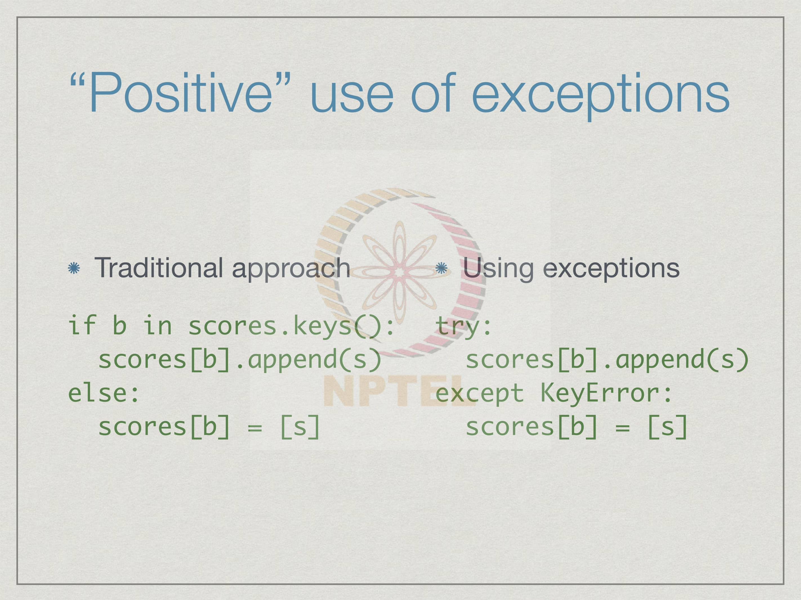A standard way to do this in using what we have already seen, is to use the command the the statement in to check whether the value b already occurs as a key in scores. So, we say if b is in the scores, dot keys if we have b as an existing key then we append the score otherwise we create a new entry. So, this is fine, now we can actually do this using exception handling as follows; we try to append it right we assume by default that the b batsman b already exists as a key in this dictionary scores and we try scores b dot append s. What would happen if b is not there? Well python will signal an error saying that this is an invalid key and that is called a key error. So, we can then revert to this except statement then say oh if there is key error when I try to append s to scores of b then create an entry scores of b is equal to s. So, this is just a different style, it is not saying that one is better than the other, but it is just emphasizing that once we have exception handling under our control we may be able to do things differently from what we are used to and sometimes these may be more clear it is a matter of style you might be further left or the right, but both are valid pieces of python code.
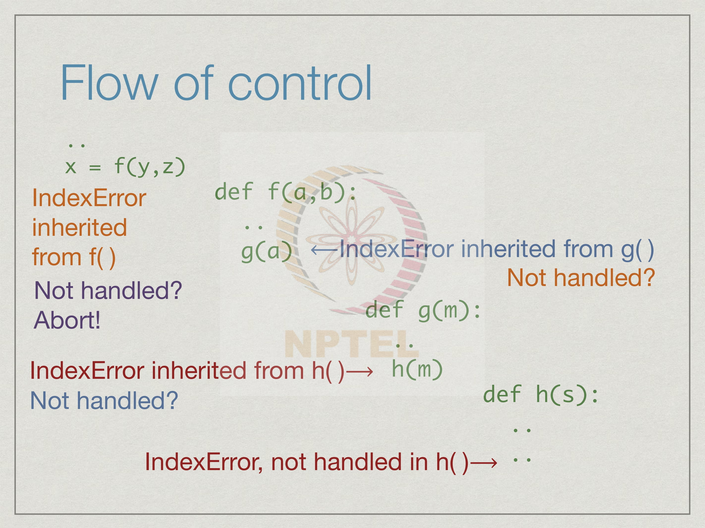
Let us examine what actually happens when we hit an error. So, suppose we start
executing something and we have a function call to a function f, with parameters y and z
this will go and look up a definition for the function and inside the definition perhaps.
So, this call results in executing this code and this definition might have yet another
function called in it call g. This will in turn transfer us to a new definition sorry this
should be on the same line g and this might in turn have another function h and finally,
when we go to h perhaps this where the problem happens.
Somewhere inside h perhaps there is an index error and where we used this list for
example, in h we did not put it on a try block and so, the error is not handled. So, what
happens we said is when an error is not handled the program aborts, but the program
does not directly abort; this function will abort and it will transfer the error back to
whatever called it. So, what will happen here is that this index error will go back to the
point where, h was invoked in g.
Now, it is as though g has generated an index error calling h has generated an index
error. So, an index error is actually now within g because h did not do anything with that
error we just passed it back with the error. Now, we have two options either g has a try
block, but if g does not have a try block then this error will cause g to abort.
So, what will happen next is that if g does not handle it then this will go back to where g
was called in f and likewise if now f does not handle it then it will go back to where f
was called in the main program. So, we keep back going back across the sequence of
function calls passing back the error.
If we do not handle it in the function where we are right now, the error goes back this
function aborts it goes back and finally, when it reaches the main thread of control the
first function of the first python code, that we are executing there if we do not handle it
then definitely the overall python program aborts. So, it is not as though the very first
time we find an error which is not handled it will abort it will merely pass control back to
where it was called from and across the sequence of calls hierarchically we can catch it
at any point. So, we do not have to catch the error at the point where its handled we can
catch it higher up from the point that is calling us.
To summarize exception handling allows us to gracefully deal with run time errors. So,
python when it flags an error tells us the type of error and some diagnostic information.
Using a try and except block, we can check the type of error and take appropriate action
based on the type. We also saw with that inserting a value into a dictionary example that
we can exploit exception handling to develop new styles of programming and finally,
what we will see is that, as we go ahead and we start dealing with input output and files
exceptions will be rather more common as we saw earlier one of the examples we
mentioned was a file is not found or a disk is full.
Input and output inherently involves a lot of interaction with outside things outside the
program and hence is much more prone to errors and therefore, is useful to be able have
this mechanism within our bag of tricks.
5.2 Standard input and output
Till now, all the programs that you have been asked to write in your assignments have actually been just functions.
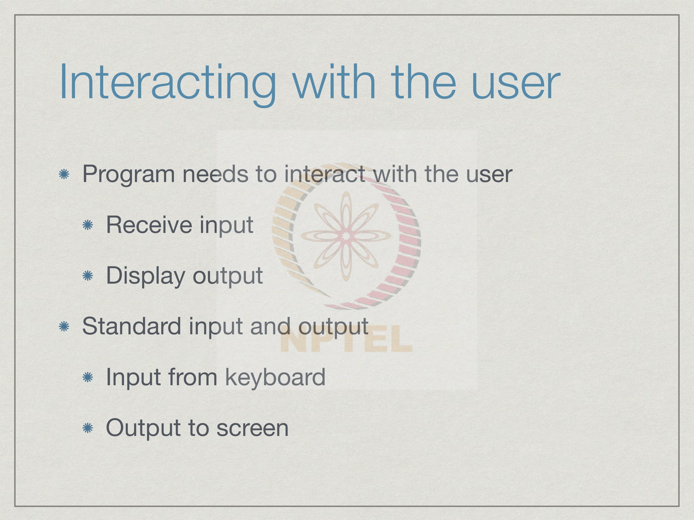These are functions, which are called from other pieces of python code and return values to them. Now, when you have a stand-alone python program, it must interact with the user in order to derive inputs and produce outputs. Let us see, how python interacts with its environment. The most basic way of interacting with the environment is to take input from the keyboard and display output to the screen.
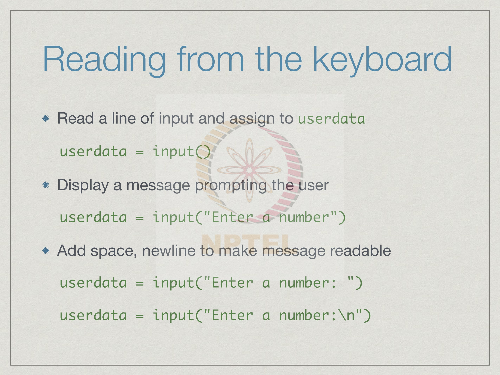
Traditionally, these modes are called standard input and standard output. So, standard
input just means, take the input from the keyboard or any standard input device like that
and standard output just means display the output directly on the screen. The basic
command in python to read from the keyboard is input. If we invoke the function input
with no arguments and assign it to a name, then, the name user data will get the value
that is typed in by the user at the input command.
Remember that, it reads a line of input. The way that the user signals that the input is
over, is by hitting the return button on the keyboard and the entire sequence of characters
up to the return, but not including the return, is transmitted as a string to user data. Now,
of course, if the program is just waiting for you for input, it can be very confusing. So,
you might want to provide a prompt, which is a message to the user, telling the user,
what is expected. So, you can provide such a thing by adding a string as an argument to
the input. If you put an argument to input like this, then, it is a string which is displayed
when the user is supposed to input data.
Now, this string is displayed as it is. So, you can make appropriate adaptations to make it
little more user-friendly. We will see an example in a minute, but you might want to
leave a space or you might want to insert a new line. Basically, you use the input
command to read one line of input from the user and you can display a message to tell
the user what is expected of him. So, here is what happens if I just say userdata is equal
to input(), the python program will just wait and now, as a user who does not know what
is expected, we do not know whether it is processing something or it is waiting for input.
Now, it so turns out that, if we type something and press enter, it will come back. Now, if
I ask for the contents of the name userdata, it will be impact me the string of things that I
had typed. So, providing an input prompt without a message can be confusing for the
user. So, what we said was, we might want to say something like, provide an input like
this. Now, it provides us with a message, but the number that we type for instance, is
stuck to the message. It is not very readable. So, userdata is indeed not a number, now, it
is a string as we will see in a minute.
But the fact is that, we did not get any space or anything else. It looks a bit ugly. So,
what we said is that you can actually, for instance, put a colon and a space so that the
message comes like this. Now, this is a slightly nicer prompt and you could also pfirefut
a new line if you want, which is signalled by this special character, backslash n. Now,
the message comes and then, you type on a new line and in all cases, the outcome is the
same; userdata, the name to which you are reading the input, becomes set to the string
that is typed in by the user. If I do it again and if I type in something else like 993, for
example, then userdata becomes the string “993”. So, you can use input with a message
and make the message as readable as you can.
As we saw, when we were playing with the interpreter, the input that is read by the
function input is always a string. Even if you say, enter a number and the user types in a
number, this is not actually a number. If you want to use it as a number, you have to use
this type conversion. Remember, we have these functions int, str and so on. So, we have
to use the int function to type convert whatever the user has typed, to an integer. Now, of
course, remember that, if the user types some garbage, then you get an error, right. If the
user does not type some, something valid, then you will get an error. So, what we can do
is, we can use exception handling to deal with this error.
So, what we can say is, try userdata. This is the code that we had before: those 2 lines.
So, what we want to say is, we will try these lines, but if the user types something which
is not a number, then, we are going to ask him to type it again and it will turn out that,
that type of error in python is called a value error.
So, you can verify this by going to the python interpreter and checking. In the python
interpreter, if we try to apply int to some nonsensical things, then we get a value error.
So, what we are trying to say is that, if we get a value error, we want to take appropriate
action. So, we have this try block and if we see a value error, what we do is, we print a
message. Now, we are going to see print just after this, but we print a message to the
user, saying this is not a number, try again and this is now, the whole thing is enclosed
inside a while loop and this while loop has a condition True.
In other words, the condition is never going to become false; this while loop is going to
keep on asking for a number. So, how do we get out of this? Well, if I come here and I
get a value error, it will go back and the while will execute again. but if there is no error,
remember, if there is no error here, then it will come to the else. This else is executed if
there is no error and what the else does is, it gets us out of this vicious cycle.
In other words, we are in an infinite loop, where we keep on trying to get one more piece
of data from the user, until we get something that we like and when we get that, we break
out of the loop. This is another kind of idiomatic way to use exceptions, in the context of
input and output. As we said in the last lecture, input and output is inherently error prone,
because, you are dealing with an uncertain, interacting environment, which can do
things, which you cannot anticipate or control. So, you must take appropriate action to
make sure that the interaction goes in the direction that you expect.
The other part of interaction is displaying messages, which we call standard output or
printing to the screen.
And, this is achieved using the print statement, which we have seen occasionally, informally, without formally having defined it. The basic form of the print statement is to give a sequence of values, separated by commas. So, print x, y will display the value of x, then, a space, then, the value of y. ‘print a, b, c’ will display 3 values; the values of a, b and c, separated by spaces. Now, the other thing that we can do is, directly print a string or a message. Like we saw in the previous example, we can say, print the string “Not a number. Try again”. This will display this string on the screen. Now, you can combine these two things in interesting ways. So, print takes, in general, a sequence of things of arbitrary links, separated by commas. These things could be either messages or names. So, we can say things, supposing, we want to print the value of x and y, but we want to indicate to the output, which is x, which is y. Instead of saying, just print x comma y, which produces 2 values on the screen, with no indication as to which is x and which is y, we could have this more elaborate print statement, which prints 4 things. The first thing it prints is a message saying, the values are x colon. This will print x colon; it will leave a space; then, it will print the value of, current value of x; then, it will print y colon after a space and then, it will print the current value of y.
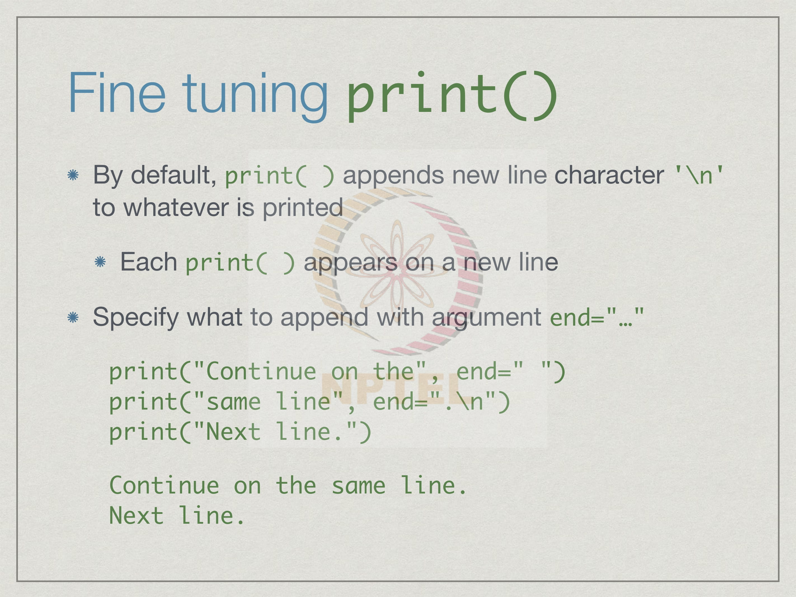
So, we can intersperse messages with values, with names, to produce meaningful output
that is more readable. By default, print appends a new line whenever it is executed. In
other words, every print statement, we just print the way we have done so far, appears on
a new line because the previous print statement implicitly moves the output to a new
line. Now, if we want to control this, we can use an optional argument called end. So, we
can provide a string saying, this is what should we put at the end of the print statement;
by default, the value here is this new line character. So, we can replace this by something
else.
Here is an example. Supposing, we write these 3 statements. The first statement says,
‘print “Continue on the”’; this is just a string; but set end to a space. The second line
says, ‘print “same line”’ and then, it says, set end to a full stop and a new line. And then,
the third statement says, ‘print “Next line.”’. So, what we are doing is, in the first 2
statements, we are changing the default.
The default would have been to print a new line, but the first statement is not printing a
new line. If we print this, what we see is that, the first 2 statements continue on the same
line, come on a single line, because, we have disabled the default print new line and we
have explicitly put a new line here and this has forced the next one to come on the next
line. If we break this up and see what happens here, we see that, in the first statement, we
had this end, which says insert a space and this is why we get a space between the word
‘the’ on the first line and the word ‘same’ coming in the second line.
Otherwise, ‘the’ and ‘same’ would have been fused together as a single word, right. So,
end equal to space is effectively separating this print from the next print by a space. The
next print statement inserts a full stop and a new line. Implicitly, although the word same
line ends without a full stop, we produce a full stop and after we produce a full stop, it
produces a new line and finally, after this new line, the next line comes in the new line
and of course, because here we did not say anything; if we print after that, we implicitly
would print on a new line.
The other thing that we might want to control is how the items are separated on a line.
We said that, if we say print x comma y, then x and y will be separated by a space by
default, right. If we do this, print x, y, we set x equal to 7, y equal to 10 and we say x is x
and y is y and then, we want to end with a full stop. This is what you want; you want to
write a string, ‘x is’, then the value of x and ‘y is’, then the value of y and then, a full
stop. Now, because everything is separated by a space, what we find is that, we find a
space over here; do you see this? This is fine. So, we get a space here, because, that is
from this comma; we get a space here, which is from this comma; we get a space here,
which is from this comma.
And then, we get an unwanted space between 10 and the full stop. So, how do we get rid
of this space, the second space, right? We do not want a full stop to come after the space.
So, just like we have the optional argument end, we have an optional argument sep,
which specifies what string should be used to separate. So, for example, if we take the
earlier thing, we can say, do not separate it with anything.
Now, of course, do not separate it with anything, it changes, because, then, this x is 7
will get fused and this and this will get fused. So, what we do instead is, we put the space
explicitly here. Earlier, we had no space here, at the end, just around the quotes. Now,
we put spaces where we want them and we say do not put any other spaces. So, what this
will say is that, x is space, I give this space; do not put the space, put the value of x; do
not put a space, now, I give a space. So and y is, give a space and then, now do not put a
space here. These commas do not contribute any space, because I have set separator
should be empty and in particular, what this means is that, this last comma, the comma
between the y and the full stop, will not generate a space.
And in fact, if you execute this, then, you will get the output, x is 7 and y is 10 and the
way it works is that, this is the first block. This is everything up to here. Then, this is the
second block, this is this. Then, this is the third block, which is this whole thing, with the
spaces given and then, this is the value of y and finally, this is the full stop. This is one
way to control the output of a print statement.
So, with the optional arguments end and sep, we can control when successive prints continue on the same line and we can control to some limited extent, how these values are separated on a line. But we may actually want to do a lot more. We might want to put a sequence of things, so that, they all line up, right. Supposing, we want to print out a table using a print statement, we want to make sure that the columns line up. So, we might want to say that, each item that we want to print, like we have printing a sequence of numbers, line by line, because, the numbers may have different widths; some may be 3 digits, some may be 5 digits; we might say print them all to occupy 7 characters width, right. This is a thing that we might want to do, align text. Now, within this alignment, we might want to align things left or right. If we have a default with, say 10 characters; if they are numbers, we might want them right aligned, so that the units digit is aligned up; if they are names, we might want them left aligned, so that we can read them from left to right, without it looking ragged. And if we are doing things like calculating averages or something, we may not want the entire thing to be displayed; we might want to truncate it to 2 decimal points; say, it is currency or something like that. These are all more intricate ways of formatting the output and we will see in the next lecture how to do this. But right now, you can use end and sep to do minimal formatting.
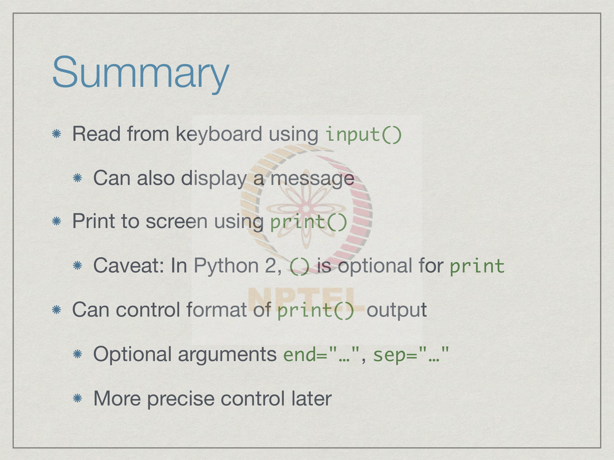
To summarize, you can use the input statement with an optional message, in order to
read from the keyboard. You can print to the screen using the print statement. Now, we
mentioned at the beginning that, there are some differences between python 2 and 3 and
here is one of the more obvious differences that you will see, if you look at python 2
code, which is available from various sources.
In python 2, you can say print space and then, give the, what is given as the arguments to
print in python 3. Python 3 insists on it being called like a function, with brackets; in
python 2 the brackets are optional. So, you will very often see, in python 2 code,
something that looks like print x, y, given without any brackets. This is legal in python 2;
this is not legal in python 3. Just be careful about this.
And what we saw is that, with the limited amount of control, we can make print behave
as we want. So, we can specify what to put at the end. In particular, we can tell it not to
put a new line. So, continue printing in the same line and we can separate the values by
something other than the default space character.
5.3 Handling files
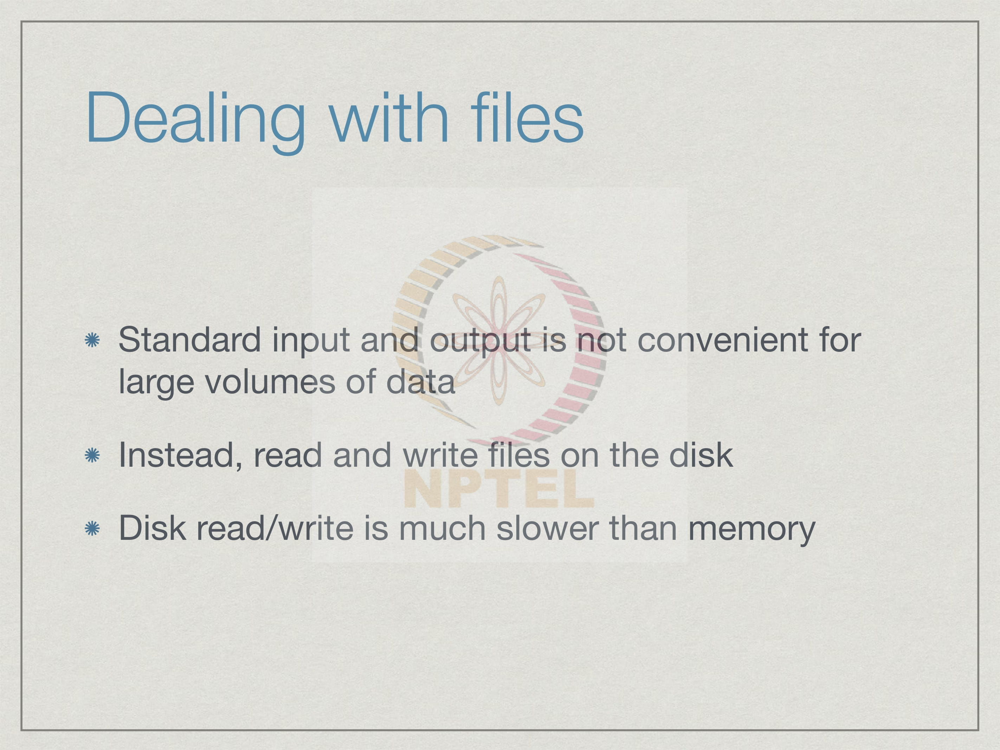In the last lecture we saw how to use the input and print statements to collect input from the standard input that is the keyboard, and to display values on the screen using print. Now, this is useful for small quantities of data, but we want to read and write large quantities of data. It is impractical to type them by hand or to see them as a scroll pass in this screen. So, for large data we are forced to deal with files which reside on the disk. So, we have to read a large volume of data which is already written on a file in the disk and the output we compute is typically return back into another file on the disk. Now, one thing to keep in mind when dealing with disks is that disk read and write is very much slower than memory read and write.
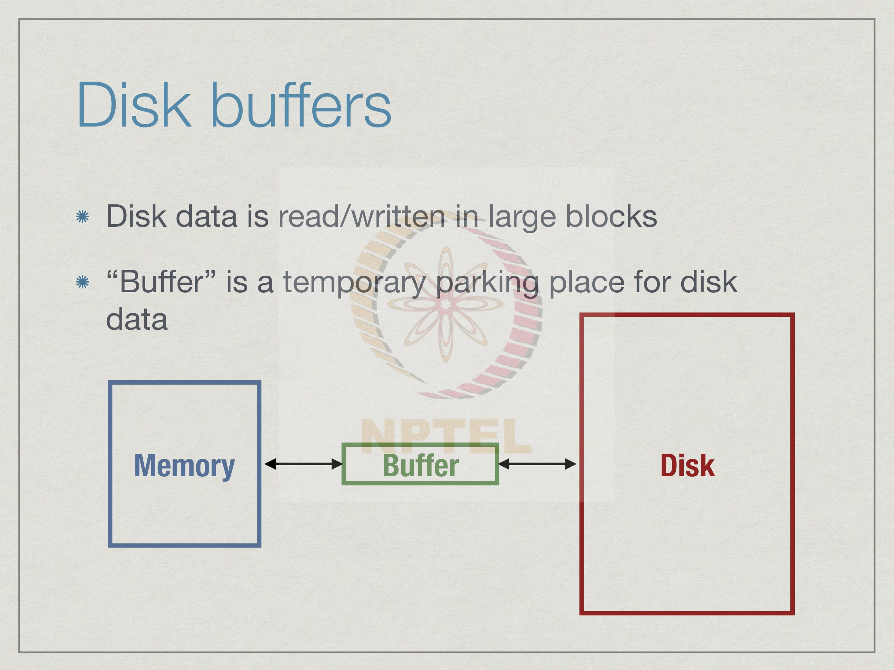To get around this most systems will read and write data in large blocks. Imagine that you have a large storage facility in which you store things in big cartons. Now, when you go and fetch something you bring a carton at a time even if you are only looking for, say one book in that carton, you do not go and fetch one book out of the carton from the storage facility, you bring the whole carton and then when you want put things back again you assemble them in a carton and put them back. In the same way, the way that data flows back and forth between memory and disk is in chunks called blocks. So, even if you want to read only one value or only one line it will actually a fetch large volume of data from the disk and store it in what is called a buffer and then you read whatever you need from the buffer. Similarly, when you want to write to the disk you assemble your data in the buffer when the buffer is enough quantity to be written on the disk then one chunk of data or block is written back on the disk.
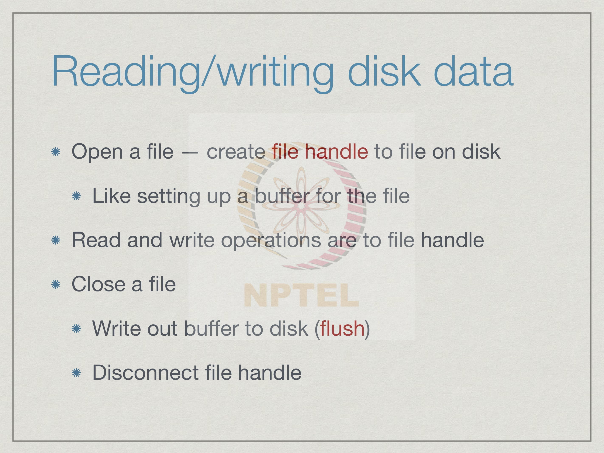When we read and write from a disk the first thing we need to do is connect to this buffer. This is called opening a file. So, when we open a file we create something called a file handle and you can imagine that this is like getting access to a buffer from which data from that file can read into memory or written back. Now, having opened this file handle everything we do with the file is actually done with respect to this file handle. So, we do not directly try to read and write from the disk, instead we read and write from the buffer that we have opened using this file handle and finally, when we are done with our processing we need to make sure that all the data that we have written goes back. So, this is done by closing the file. So, closing the file has two effects; the first effect is to make sure that all changes that we intended to make to the file. Any data we want to write to the file is actually taken out to the buffer and put on to the disk and this technically called flushing the buffer. So, closing a file flushes the output buffer make sure that all rights go back to the file and do not get lost and the second thing it does is that it in some sense makes this buffer go away. So, it disconnects the file handle that we just set up. Now, this file is no longer connected to us if we want to read or write it again we have to again open it.
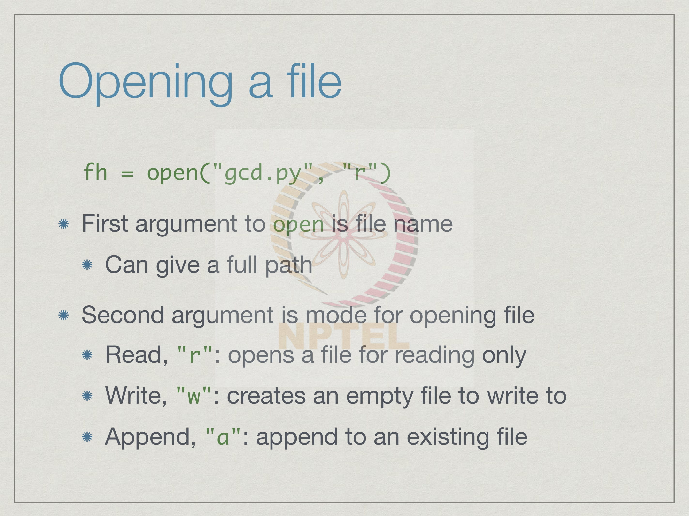
The command to open a file is just ‘open’. The first argument that you give open is the
actual file name on your disk. Now, this will depend a little bit on what system you are
using, but usually it has a first part and an extension. This commands, for instance, to
open the file gcd dot py. Now implicitly, if you just give a file name it will look for it in
the current folder or directory where you running the script. So, you can give a file name
which belongs to the different part of your directory hierarchy by giving a path and how
you describe the path will depend on whether you are working on Windows or Unix,
what operating system you are using.
Now, you see there is a second argument there, which is letter ‘r’. This tells us how we
want to open the file. So, you can imagine that if you are making changes to a file by
both reading it and writing it, this can create confusion. So, what we have to do is decide
in advance whether we are going to read from a file or write to it, we cannot do both.
There is no way we can simultaneously read from a file and modify it while it is open.
So, read is signified by ‘r’.
Now, write comes in two flavors, we might want to create a new file from scratch. In this
case we use a letter ‘w’. So, ‘w’ stands for write out a new file, we have to be bit careful
about this because if we write out a file which already exits then opening it with more
‘w’ will just overwrite the contents that we already had. The other thing which might be
useful to do is to take a file that already exists and add something to it. This is called
append. So, we have two writing modes; ‘w’ for write and ‘a’ for append. What append
will do is it will take a file which already exists and add the new stuff the writing at the
end of the file.
Once we have a file open, let us see how to read. So, we invoke the read command
through the file handle. This is like some of the other function that you saw with strings
and so on, where we attach the function to the object. So, fh is the file handle we opened,
we want to read from it. So, we say fh dot read, what fh dot read does is it swallows the
entire contents the file as a single string and returns it and then we can assign it to any
name, here we use the name contents. So, contents is now assigned the entire data which
is in the file handle pointed by fh in one string.
Now, we can also consume a file, we are typically dealing with text files. So, text file
usually consists of lines; think of python code, for example, we have lines after lines
after lines. A natural unit is a bunch of texts which is ended with new line character. If
you remember this is what the input command does, the input command waits for you
type something and then you press return which is a new line and whatever you type up
to the return is then transmitted by input as a string to the name that you assigned to the
input.
So, readline is like that, but the difference between the readline and input is that, when
you read a line you get the last new line character along with the input string. When you
say input you only get the characters which come before the last new line the new line is
not included, but in readline you do get the new line character.
So, you have to remember that you have the extra character floating around at the end of
your string. So, this is conventionally the noted backslash n. The backslash n is a
notation which denotes a single character even though looks two characters. This is
supposed to be the new line character. Now, the actual new line character differs on
operating systems from one to the other, but in python if we use backslash n and it will
correctly translated in all the systems that you are using.
The third way that you can read from a file is to read all the lines one by one into a list of
strings. So, instead of readline, if I say readlines then it reads the entire the files as a list
of srings. Each string is one item in the list and remember again each of these lines has
the backslash n included. So, read, readline and readlines, none of them will actually
remove the backslash n. They will remain faithfully as part of your input.
In other words, if you are going to transfer this from one file to another, you do not want
to worry reinserting the backslash n because this is already there. So, you can use this
input output directly, but on the other hand, if you want to do some manipulation of the
string then you must remember this backslash n is there and you must deal with it
appropriately.
Reading files is inherently a sequential operation. Now, of course, if we use the basic
command read, it reads the entire content. So obviously, it reads from beginning to the
end, but if you are reading one line at a time then the way it works is that when we open
the file we are initially at the beginning of the file. So, you can imagine a pointer like this
red arrow which tells us where we are going to read next. So, initially when we open we
are going to read from the beginning, now each readline takes us forward. If I do a
readline at this point it will take me up to the next backslash n.
Remember a line is a quantity which is delimited by backslash n. So, we could have a
line which has 100 characters, next line could have 3 characters and so on. It is from one
backslash n to the next is what a line, so this is not a fixed link. So, we will move
forward reading one character at a time until we have backslash n, then everything up to
the backslash n will be returned as the effect to a string return by the readline and pointer
move to the next character. Now, we do another readline possibly of different line again
the point to move forward. So, in this way we go from beginning to the end.
In case we want to actually divert from the strategy there is a command seek, which
takes a position, an integer n, and moves directly to the position n regardless of where
you are. This is one way to move back or to jump around in a file other than by reading
consecutively line by line.
Finally, we can modify the read statement to not to read the entire file, but to read a fix
number of characters. Now, this may be useful if your character actually your file
actually consists of fix blocks of data. So, you might have say, for example, pan numbers
which are typically 10 characters long and you might have just stored them as one long
sequence of text without any new lines knowing that every pan number is 10 characters.
So, if we say fh dot read 10, it will read the next pan number and keep going and this
will save you some space in the long run. So, there are situation where you might exploit
this where you read a fix number of characters.
When we are reading a file incrementally, it is useful to know when the file is over because we may not know in advance how long files is or how many lines of file is. So, if you are reading a file line by line then we may want to know when the file has ended. So, there are two situations where we will know this. So, one is if we try to read using the read command and we get nothing back, we get an empty string that means the file is over, we have reached end of file. Similarly, if we try to read a line and we get empty string it means we reached the end of file. So, read or readline if they return empty string its means that we have reached the end of the file. Remember, we are going sequential from beginning to the end. So, we reached the end of the file and there is nothing further to read in this file.
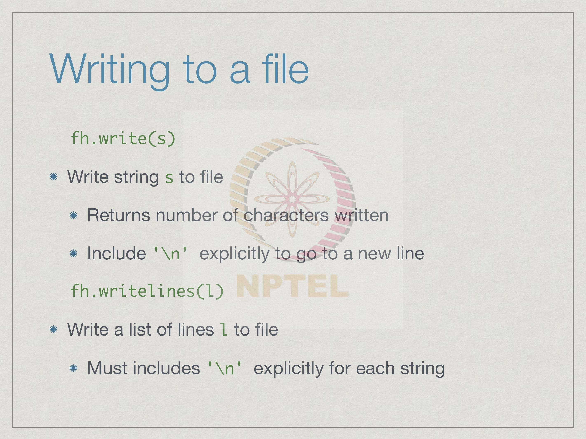Having read from a file then the other thing that we would like to do is to write to a file. So, here is how you write to a file just like you have read a command you have a write command, but now unlike read which implicitly takes something from the file and gives to you, here you have to provide it something to put in the file. So, write takes an argument which is a string. When you say, write s says take the string s and write it to a file. Now, there are two things; one is this s may or may not have a backslash n, it may have more than one backslash n. So, is nothing tells you this is one line part of a line more than a line you have to write s according to the way you want it to be written on the file, if you want it to be in one line you should make sure it ends with a backslash n. And this write actually returns the number of characters written. Now, this may seem like a strange thing to do, why should it tell you because you know from the length of s what is number of character is written, but this is useful if, for instance, the disk is full. If you try to write a long string and find out only part of the string was written and this is a indication that there was a problem with the write. So, it is useful sometimes to know how many characters actually got written out of the characters that tried to write. The other thing which writes in bulk to a file is called writelines. So, this takes list of strings and writes them one by one into the file. Now though it says write lines these may not actually be lines. So, its bit misleading the name if you want to them in lines you must make sure that you have each of them terminated by backslash n. If they are not then they will just cascade to form a long line thing. So, though it says writelines it should be more like write a list of strings, that should, that is a more appropriate name for this function, it just takes a list of strings and writes it to the file pointed to by the file handle.
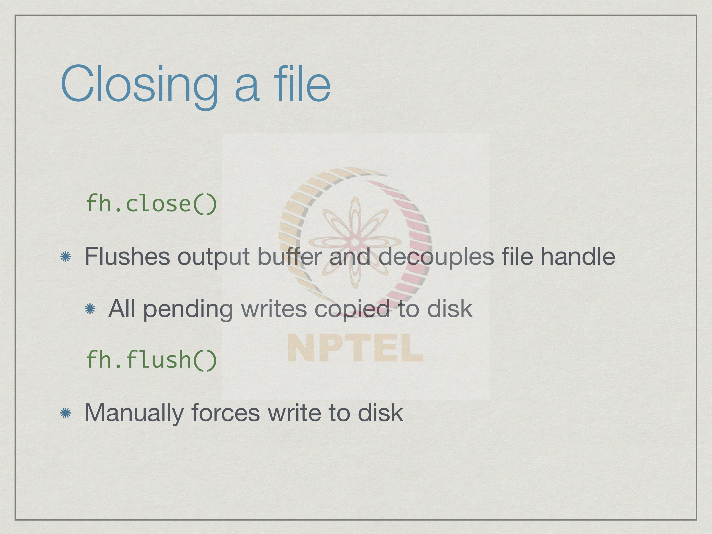And finally, as we said once we are done with a file, we have to close it and make sure the buffers that are associated with the file, especially if you are writing to a file that they are flushed. So, fh dot close, will close the file handle fh and all pending writes at this point are copied out to the disk. It also now means that fh is no longer associated with the file we are dealing with. So, after this if we try to invoke operation on fh it is like having undefined name in python. Now, sometimes there are situations where we might want to flush the buffer without closing the file. We might just want to make sure that all writes up to this point have been actually reflected on the disk. So, there is a command flush which does this. In case we say flush, it just say if there are any pending writes then please put them all on to the disk, do not wait for the risk drives to accumulate until the buffer is full and then write as you normally would to the disk.
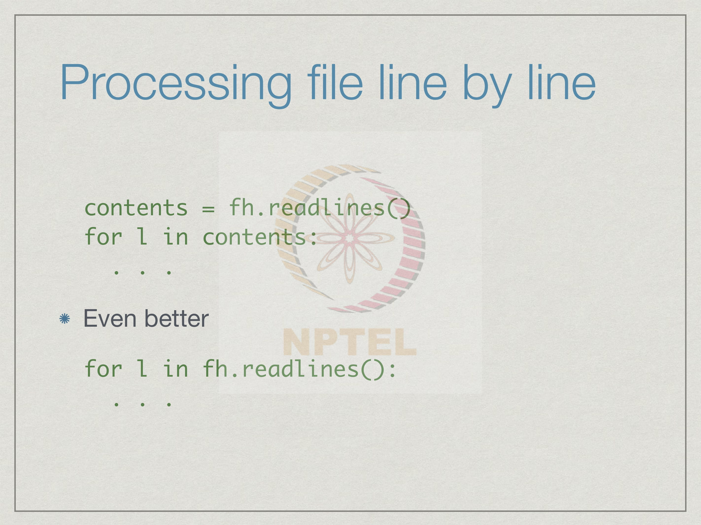Here is a typical thing that you would like to do in python, which is to process it line by line. The natural way to do this is to read the lines into a list and then process the list using for. So, you say content is fh dot readlines and then for each line and contents you do something with it. You can actually do this in a more compact way, you can get do away with the name contents and just read directly every line return by the function fh dot readlines. So, this is the equivalent formulation of the same loop.
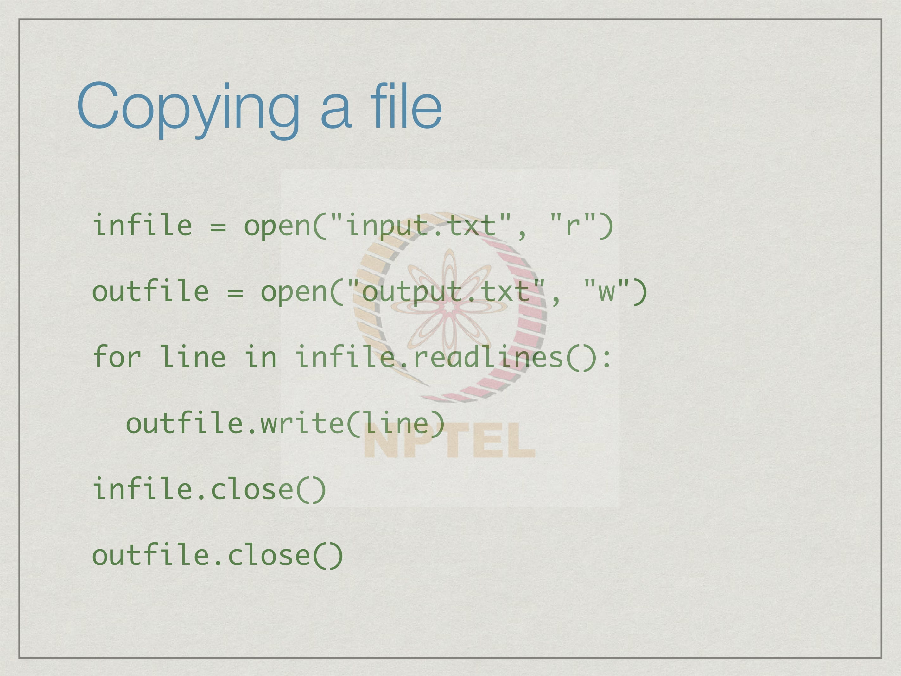As an example, for how to use this line by line processing, let us imagine that we want to copy the contents of a file input dot txt to a file output dot txt. So, the first thing we need to do is to make sure that we open it correctly. We should actually open outfile with mode ‘w’ and in file mode ‘r’. This tells that I am going to read from infile and write to outfile. Now, for each line in returned by readlines on infile, remember that when I get line from readline the backslash n is already there, if I do not do anything to the backslash n, I can write it out the exactly the same way. So, for each line that I read from the list infile dot readlines I just write it to outfile and finally, I close both the files. This is one way to copy one file from input to output.
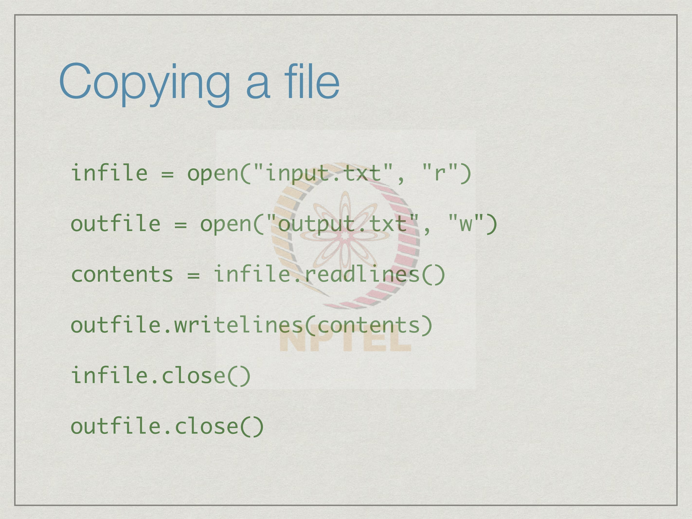Of course, we can do it even in one shot because there is a command called writes lines, which takes the list of strings and writes them in one shot. So, instead of going line by line through the list readlines we can take the entire list contents and just output it directly through writelines, this is an alternative way where I have replaced. This is basically replacing the for. So, instead of saying for each line in infiles I can just write it directly out.
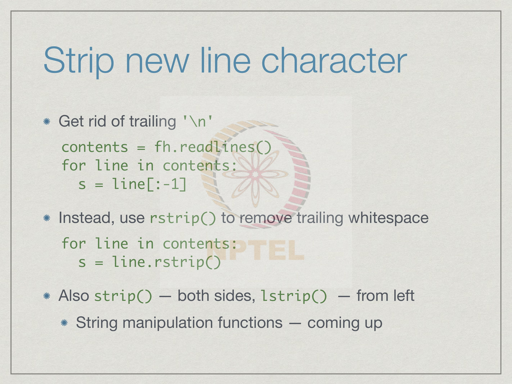
One of the things we are talking about is this new line character which is a bit of
annoyance. If we want to get with a new line character, remember this is only a string
and the new line character is going to be a last character in this string. So, one way to get
is just to take slice of the string up to, but not including the last character. Now,
remember that we when we count backwards minus 1 is the last character. If we will take
the slice from 0 up to minus 1 then it will correctly exclude the last character from the
string.
So, s is equal to line colon minus 1, will take the line and the strip of the last character
which is typically backslash n that we get, when we do readlines. Now, in general we
may have other spaces. So, remember when you write out text very often we cannot see
the spaces the end of the line because they are invisible to us. These are what are called
white space. So spaces, tabs, new lines, these are characters which do not display on the
screen, especially spaces and tabs and there at a end of line, we do not know the line
ends with the last character we see there are spaces after words.
So, r strip is a string command which actually takes a string and removes the trailing
white space, all the white spaces are at end of the line. In particular there is only a
backslash n and it will strip to a backslash n. It also strips to other jump there is some
spaces and tabs before the backslash n and return that. So, s equal to line dot r strip that
is strip line from the right of white space. This is an equivalent thing to the previous line
except it is more general because strips all the white space not just by the last backslash
n, but all the white spaces end of the line.
We can also strip from the left using l strip or we can strip on both sides if we just say
strip without any characterization l or r. These are the string manipulation functions and
we will look at some more of them, but this is just useful one which has come up
immediately in the context of file handling. So, before we go ahead let us try and look at
some examples of all these things that we have seen so far.
We have created a file called input dot txt which consist of a line, the quick brown fox
jumps over the lazy dog. Now, let us open the python interpreter and try to read lines
from this file and print it out. So, we can say, for instance, that f is equal to open input
dot txt in read. Now, I have opened the file and now I can say, for instance, for line in f
dot readlines print line. Now, you will see something interesting happening here, you
will see that we have now a blank line between every line our file.
Now, why is there blank lines between every line in our file that is because when we
readlines we get a backslash n character from the line itself. So, the quick brown, the first
line end with the backslash n, fox end with backslash n and then over and above that if
you remember the print statement adds a backslash n of its own. So, actually print is
putting out to blank lines for each of these.
Now, let us try and do this again, supposing I repeat this thing and now I do this again,
now nothing happens the reason nothing happens is because we had this sequential
reading of the file. So, the first time we did f dot readlines, it read one line at a time and
now we are actually pointing to the end of the file.
If for instance, at this point we were to say text equal to fh dot read, sorry f dot read, then
text will be empty string. This is the indication that we have actually reached the end of
the file. Similarly, if we try to say readline again text will be empty string. So, remember
we said that if read or readlines returns the empty string then we have reached the end of
the file. The only way we can undo this is to start again by closing the files. So, what we
say is f dot close. This closes of the file.
Now, if you try to do f dot read then we will get an error saying that this is not being
defined. So, we do not have f with us anymore. So, again we have to say f is open input
dot txt r and now we can say while for line in f dot readlines for each line. Supposing, we
now use that trick that we had last time which is to say end equal to empty string that
says do not insert anything after each print statement. Now, if you do this you see we get
back to exactly the input files as it is without the extra blank lines because print is no
longer creating these extra lines.
Let us say we want to copy input dot txt to a output dot txt, we say f is equal to open
input dot txt r as before and we say g is equal to open output dot txt w and now we say
for line in f dot readlines, g dot write line.
Now, notice you get the sequence of numbers why do we get a sequence of numbers that
is because each time we write something it returns a number of character written and it
will turn out, if you look at the lines quick brown fox, etcetera, for example, the second
line is just fox, fox has three letters, but if you include the backslash n its wrote 4 letters.
That is why quick brown was 15 letters plus a backslash n, fox was a 3 plus backslash n.
So, this is line by line. Now, if I correctly close these files then come out of this, then
output dot txt is exactly the same as input dot txt.
To summarize what we have seen is that, if you want to interact with files we do it
through file handles, which actually corresponds to the buffers that we use to interact
between the memory and the file on the disk. We can open a file in one of three modes;
read, write and append. We did not actually do an example with the append, but we do
append what it will do, keep writing beyond where the file already existed, otherwise
write will erase the file and start from the beginning.
We saw that read, readline and readlines, using this we can read the entire file in one shot
of the string or read it line by line. Similarly, we can either write a string or we write a
list of strings too. So, we have a write command in a writelines and writelines are more
correctly to be interpreters write list of strings.
Finally, we can close the handle when we have done and in between that we can flush the
buffer by using flush command and we also saw that there are some string operations to
strip white space and this can be useful to remove these trailing backslash n which come
whenever you are processing text files.
5.4 String functions
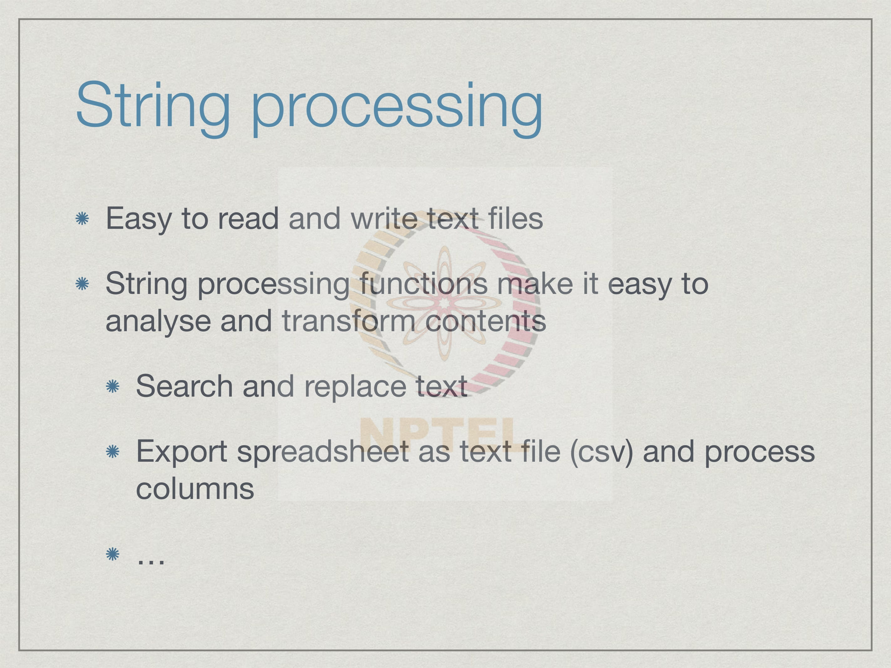The last lecture we saw how to read and write text files. And reading and writing text invariably involves processing the strings that we read and write. And so, Python has a number of string processing functions that make it easier to modify this content. So usually, you are reading and writing files in order to do something with these files, and to do something with this you can use built in string functions which are quite powerful. Among other things, what you can do with these string functions is for example, search for text or search and replace it. A typical use of string processing for a file is when we take something like a spread sheet and export it as text. There is something called a comma separated value format CSV, where the columns are output separated by commas as text. Now, what we can do with a string file is to read such a file line by line and in each line extract the columns from the text by reading between the commas. So, we will see all this in this lecture.
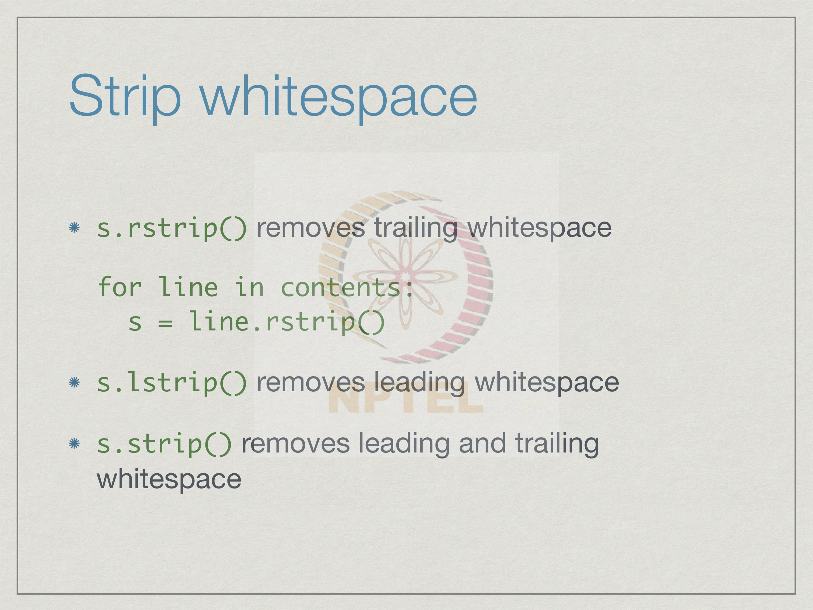
The first example of a string command that we already saw last time is the commands to
strip white space right. We have rstrip, which we used for example to remove the trailing
whitespace backslash n in our lines, and we had lstrip to remove leading whitespace, and
we had strip which removes it on both directions. Let us see how this works.
Let us create a string which as whitespace before and afterwards, so let us put some
spaces may be a tab and then the word hello and then two tabs. We have a string which
has whitespace and you can see the tabs are indicated by backslash t and blanks. Now, if
we want to just strip from the right we say t is equal to s dot rstrip. Remember this strip
command strings are immutable right it won't change s it will just return a new string, if I
say t is s dot r strip it will strip to the whitespace to the right and give me t, if I look at t it
has everything up to hello but not that tab and the space afterwards.
Similarly, if I say t is s dot l strip it will remove the ones to the left now t will start with
hello, but it will read have the whitespace at the end. Finally, if I say t is s dot strip then
both sides are gone and I will just get the word that I want. This is useful because when
you ask people to type things and forms for example, usually if they leave some blanks
before and after, so if you want everything before the first blank to be lost and the last
blank only keep the text in between then you can use the combination of lstrip, rstrip or
just strip to extract the actual data that you want from the file.
The next thing that may we want to do is to look text in a string. There is a basic
command called find. So, if s a string and pattern is another string that I am looking for
in s, s dot find pattern will return the first position in s which pattern occurs. And if
pattern does not occur, so the positions will there obviously be between 0 and the length
of s minus 1. We already wrote some our own implementation of this earlier. So, if it
does not occur it will give you minus 1.
Sometimes you may not want to search entire string, so pattern takes an optional pair of
argument start and end in which case instead of looking for the pattern from the entire
string it looks at a slice from start to end with the usual convention that this is the
position from start to end minus 1. There is another version of this command called
index. And the difference between find and index is what happens when the pattern is
not found. In find when the pattern is not found you get a minus 1, in index when the
pattern is not found you get a special type of error in this case a value error. So again let
us just see how these things actually work.
So, we have a string here s which contains the word "brown fox grey dog brown fox."
Now if I ask it to look for the first occurrence of the word "brown", then it will return the
position 0 because it is right there at the beginning of string. If on the other hand I do not
want this position, but I wanted to say starting from position 5 and going to length of s
for example, then it will say 19 and if you count you will find that the second occurrence
of brown is at position 19.
If on the other hand I look for something which is not there like "cat" then find will
return minus 1, so minus 1 is not the error but the indication that the string was not
found. The difference with index is that if I give index the same thing instead of a minus
1 it gives me a value error saying the substring does not occur right this is how find and
index work.
The next natural thing after searching is searching and replacing. If I want to replace
something I give it two strings what I am searching for and what I am replacing it with
and it will return a copy of s with each occurrence of the first string replaced by the
second string. Now this can be controlled in the following ways; supposing, I do not
want to each occurrence, but I only want say the first occurrence or the first three
occurrences.
So, I can give it an optional argument saying how many such occurrences starting from
the beginning should be replaced. It says replace at most the first n copies and notice that
like and strip and all that, here it's because changing this string replacing something by
something else, is not that s is going to change because strings are immutable is going to
return us the transform string. So let us look at an example.
Once again let us see our old example; s is "brown fox grey dog brown fox" and now
supposing I want to replace "brown" by "black", then I get 'black fox grey dog black fox.'
If I say only want 1 to be replaced then I get 'black fox grey dog' where the second
brown is left unchanged. Now you may ask what happens if I have this pattern it does
not neatly split up if I have the different copies of brown overlaps. Supposing, I have
some stupid string like "abaaba" and now I say replace all "aba" by say "DD".
Now the question is, will it find two aba s or 1 aba, because there is an aba starting at
position 0, there is also an aba in the second half of the string starting at position 2. The
question is will it mark both of these and replace them by DD, well, it does not because it
does it sequentially so it first takes the first aba, replaces it by DD, at this point the
second aba has been destroyed. So it will not find it.
Whereas, if I had for instance two copies of this disjoint then it would have correctly
found this and given me DD followed by DD. So, there is no problem about overlapping
strings it just does it from right to left and it makes sure that the overlap string is first
written, so it will not the second copy will not get transformed.
The next thing that we want to look at is splitting a string. Now when we take a
spreadsheet and write it out as text, usually what happens is that we will have an output
which looks like this. The first column would be written followed by comma then second
column, so if we had three columns then the first column set 6 second column set 7 and
the third was string hello, then we write it out a text as you will get 6, 7 and "hello".
Actually "hello" is a bit of problem because it has double quotes let us not use hello let
us use something simpler. So let us just say that we had three numbers 6, 7 and 8 for
example.
Now, what we want to do is we want to extract this information. So, we want to extract
the individual 6, 7 and 8 that we had as three values. So what we need to do is look for
this text between the strings, so we want to split the column into lines into chunks
between the commas and this is done using the split command. So, split takes a string s
and takes a character or actually could be any string and it splits the columns it gives you
a list of values that come by taking the parts between the commas. So, up to the first
comma is a first thing. So columns is just a name that we have used, it could be any list.
The first item of the list will be up to the first comma then between the first and second
comma and so on and finally after the last comma.
Comma in this case is not a very special thing you can split using any separator string.
And again just like in replace we could control how many times we replaced, here we
can also control how many splits you make. So, you can say split according to this string
notice that this could be any string so here we are splitting it according to space colon
space. But we are saying do not make more than n chunks, if we have more than n
columns or whatever chunks which come like this beyond a certain point we will just
lump it as one remaining string and keep it with us. So again let us see how this works.
Suppose this is our line of text which I will call CSV line it is a sequence of values
separated by commas notice it is a string. Now if I say CSV line dot split using comma
as a separator and then I get a list of values the string 6, the string 7, the string 8.
Remember this is exactly like what we said about input it does not get you the values in
the form that you want you then have to convert them using int or these are still strings.
So, it just takes a long string and splits it into a list of smaller strings. Now here there are
three elements so if I say for example I only want position 0, 1, 2. So, if I say I only
wanted to do it once then I get the first 6, but then 7 and 8 does not get split because it
only splits once.
Now, if I change this to something more fancy like say hash comp question mark. So
now I have a different separator it's not a single character, but hash question mark then I
can say split according to hash question mark and this will give me the same thing. You
can split according to any string it's just a uniform string. There are more fancy things
you can do with regular expression and all that, but we won't be covering that for now.
As long as you have a fixed string which separates your thing you can split according to
that fixed string.
So, the inverse operation of split would be to join strings. Supposing, we have a
collection of strings and I want to combine it in to a single string separate each of them
by a given separator. So as an example, supposing we take s which is some CSV output
and we split it into columns on comma, and then we can take join string and set it to the
value comma and then use that to join the columns.
Now this is a bit confusing, so join is a function which is associated with a string. In this
case a string in concerned is a comma. So it says, more or less you are saying comma dot
join columns which is use comma to join columns. So, you have just given it a name here
join string is equal to comma and then CSV line is join string dot join columns.
So what this says is, use comma to separate so if at the end of this I had got like last time
6, 7 and 8, then this will now put them back as 6 comma 7 comma 8 into a single string.
Here is another example, here we have a date 16 a month 08 and a year 2016 given as
strings and I want to string it together into a date like we normally use with hyphens.
Here instead of giving an intermediate name to the hyphens and then saying hyphens dot
join I directly use this string itself, just want to illustrate that you can directly use this
joining string itself as a constant string and say use this to join this list of values. All you
need to make sure is what you have inside the join in the argument is a list of strings and
what you applied to is the string which will be used to join them. Let us just check that
this works the way we actually intended to do.
Let us directly do the second example. Supposing, we say date is 16, remember these are
all strings month is 08, year is 2016, and now I want to say what is the effect of joining
these three things using dash as separator and I get 16 dash 08 dash 2016.
So there are many other interesting things you can do with strings for example, you can manipulate upper case and lower case. If you say capitalize, what it will do is it will convert the first letter to upper case and keep the rest as lower case, if you say s dot lower it will convert all upper case to lower case, if you say s dot upper it will convert all lower case to upper case and so on. There are other fancy things like s dot title. So, title will capitalize each word. This is how it normally appears say in the title of a book or a movie. S dot swap case will invert lower case to upper case and upper case to lower case and so on. So there are whole collection of functions in the string thing which deal with upper case, lower case and how to transform between these.
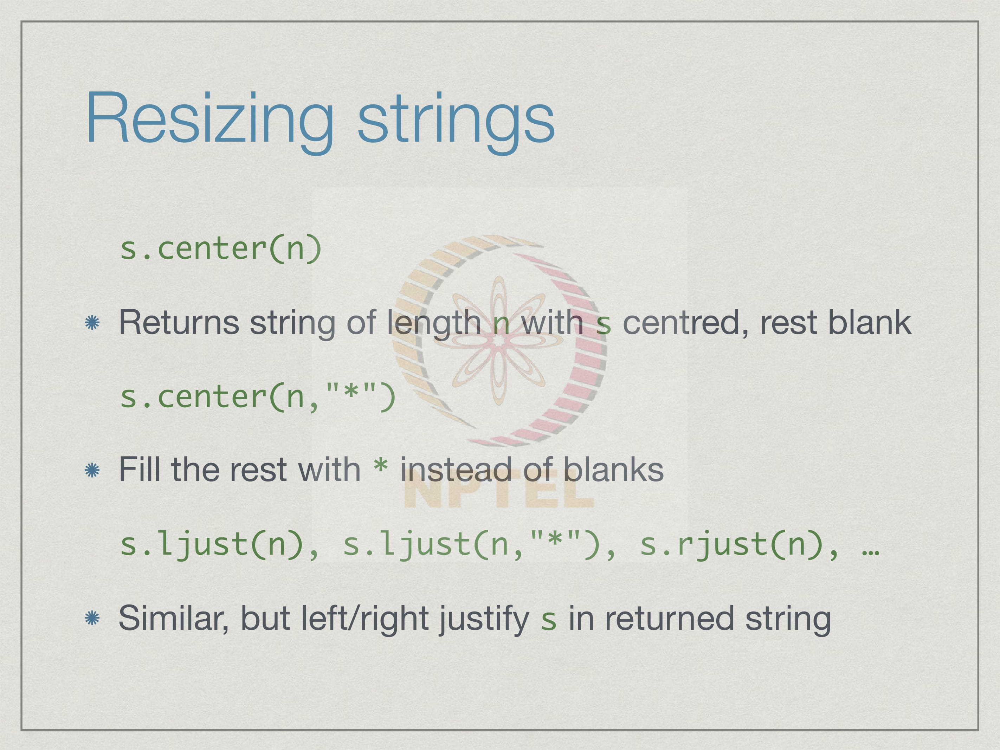 The other thing that you can do with strings is to resize them to fit what you want. So if
you want to have a string which is positioned as a column of certain width then we can
say that center it in a block of size n. So what this will do is it will return a new string
which is of length n with s centered in it.
Now by centering what we mean is that on either side there will be blanks instead of
blanks you can put anything you want like, stars or minuses. You can give a character
which will be used to fill up the empty space on either side rather than a blank. Now you
may not want it centered or you may not want to the left or the right, so you can for
example left justify during ljust or rjustify during rjust and again you can give an
optional character and so on. S, we can just check one or two of these just to see how
they work.
Suppose, we take a short string like 'hello' and now we center it in a large block of say
50. We say s dot center 50, then this gives us hello with a lot of blank spaces on either
side. Now we can replace those blank spaces by anything we want, so say minus sign
then we will get a string of a minus signs or hyphens before that. Now we can also say
that I want the thing left justified in this not a center. So if I do that then I will get hello
at the beginning and a bunch of minus signs, similarly with rjust and so on.
Some of the other types of functions which we find associated to strings are to check
properties of strings. Does s consists only of the letters a to z and capital a to capital z. So
that is what s dot is alpha says is it an alphabetic string, if it is true it means it is, if it is
not it has at least one non alphabetic character. Similarly is it entirely digits, is numeric
will tell us if it is entirely digits. So, there is a huge number of string functions and there
is no point going through all of them in this thing, we will if we need them as we go
along we will use them and explain them.
But you can look at the Python documentation look under string functions and you will
find a whole host of useful utilities which allow you to easily manipulate strings. And
this is one of the reasons that Python is a popular language because you can do this kind
of easy text processing. So you can use it to quickly transform data from one format to
another and to you know change the way it looks or to resize it and so on. String
functions are an extremely important part of Pythons utility as a glue language for
transforming things from one format to another.
5.5 Formatting printed output
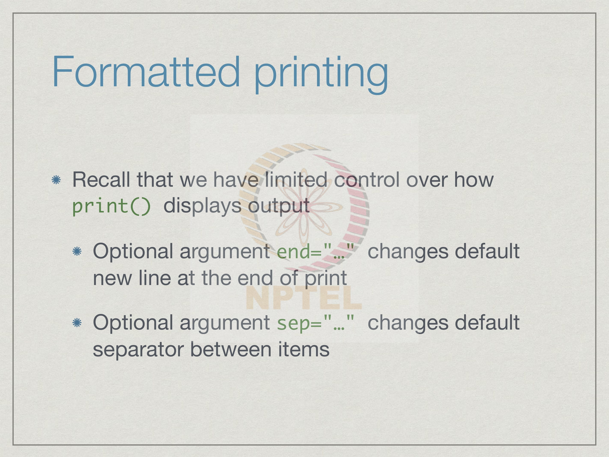When we looked at input and print earlier in this week’s lectures, we said that we could control in a limited way how print displayed the output. Now by default print takes a list of things to print, separates them by spaces and puts a new line at the end. However, it takes an optional argument end equal to string which changes what we put at the end, in particular if we put an empty string it means that it does not start a new line, so the next print will continue on the same line. Similarly we can change the separator from a space to whatever we want and in particular if we do not want any spaces we can put them ourselves and just say the separator is nothing - the empty string.
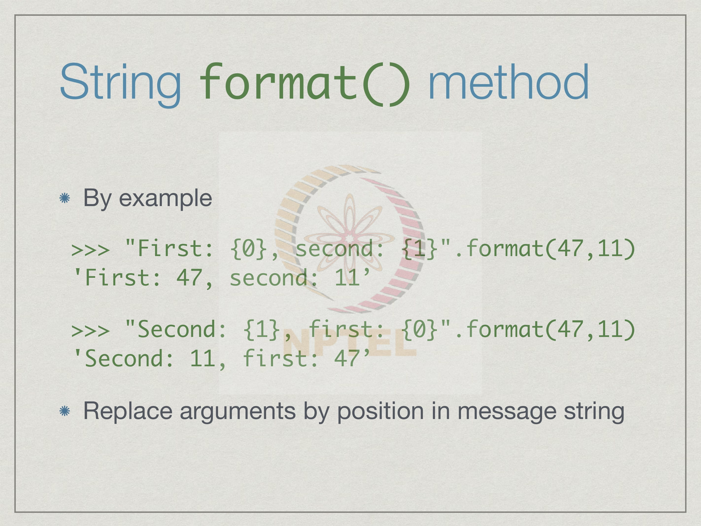Now, sometimes you want to be a little bit more precise, so for this we can use the format method which is actually part of the string library. So the set of things that we can do with strings, last, in the previous lecture we looked at other things we can do string like, find, replace and all this things, so this is like that, it is in the same class. Remember when you are doing print, you are actually printing a string. So, anything you can do to modify a string will give you another string that is what you are going to print. So, the string here is actually going to call a format method. So, the easiest way to do this is by example. We have a base string here, which is first, second and we have these two funny things in braces. The funny things in braces are to be thought of as the equivalent of arguments in the function, these are things to be replaced by actual values and then what happens is that when you give this string and you apply the format method then the 0 refers to the first argument and 1 refers to the second argument. So what we are doing is, we are replacing by position, so if I actually take this string and I pass it to python the resulting thing is first colon 47, second colon 11, because the first argument, the brace 0 is replaced by the first argument to format 47 and the second replaces the second. Now the positions determine the names so they do not have to be used in the same order. So, we could first print argument 1 and then print argument 0 as the second example shows. Essentially, this version of format allows us to pass things into a string by their position in the format thing. So we are replacing arguments by position.
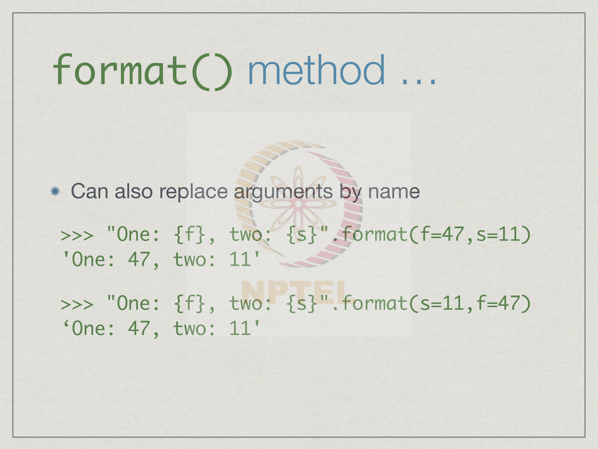Now we can do the same thing by name. This is exactly like defining a function where remember, we said that we could give function arguments and we could pass it by name. So, in same way here we can specify names of the arguments to format, we can say f is equal to 47, s is equal to 11, that is first and second. Now we can say one f and two s. Now here the advantage is not by position but by name. If I take these two things and I exchange them, so if I make f the second argument and s the first argument, and I pass it to the same string then f will be correctly caught as 47 and s as 11, so here by using the name not the position. So, the order in which you supply the things to format does not matter.
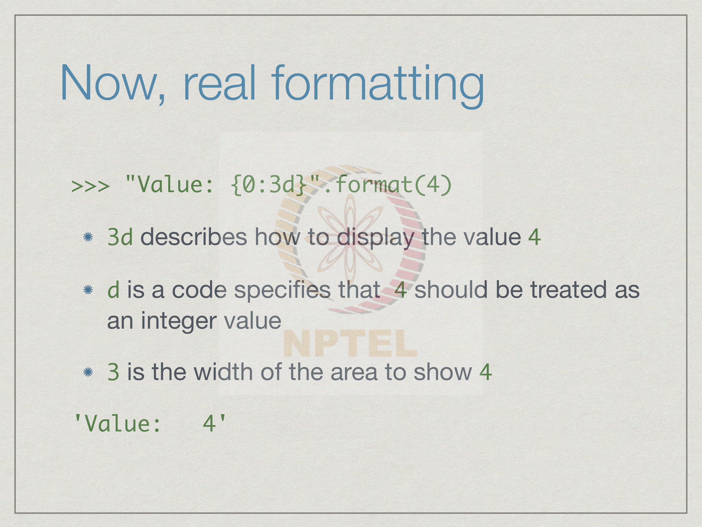
So, up to this point we have not done any formatting. All we have done is we have taken
a string and we have told us how to replace values for place holders in the string. There
is no real formatting which has happened because whatever we did with that we could
have already done using the existing print statement that we saw.
Now the real formatting comes by giving additional instructions on how to display each
of these place holders. So here we have 0 followed by some funny thing, we have this
special colon and what comes after the colon is the formatting instruction. This has two
parts here, we see a 3 and a d and they mean different things. So the 3d as a whole tells
us how to display the value there is going to be passed here, that is the first thing. D is a
code that specifies, I think it stands for decimal, so d specifies that 4 should be treated as
an integer value. So, we should actually display it as a normal integer value namely it's a
base ten integer.
Finally, 3 says that we must format 4 so that it takes three spaces. It occupies the
equivalent of three spaces though it is a single digit. So if I do all this, then what happens
is I get value, now notice that already there is one space here, then it going to take three
spaces so I am going to get two blank spaces and then a 4, so that is why we have this
long, so this is actually three blank spaces and then a 4. This whole thing, this part of it
comes from the format. So I have a blank space, a blank space and a 4, because I was
told to put 4 in a width of 3 and think of it as a number, so since its number it goes to
right hand.
Let us look at another example. Supposing, I had number which is not an integer, but a
floating point number, so it is 47.523. Now here first thing is that we have instead of d
we have f for floating point. So, f, 6.2f, this whole thing to the right of the colon tells me
how to format the values comes from here. 6.2f breaks up as follows; the f, the letter part
of it always tells me what the type of value is. So, it says that 47.523 should be treated as
a floating point value. And the second thing is that it says this 6 tells me how much space
I have to write whatever I have to write. So it says the total value including the decimal
point, everything is going to be 6 characters wide.
Finally, the 2 says how many digits to show after the decimal point. If I apply all this
then first of all because I have only two digits after decimal point this 3 gets knocked off,
and then because it’s set to use 6 character, now if I count from the right, this is 1, 2, 3, 4,
5 characters but it’s set to use 6 characters, that is why there is an extra blank here. If you
notice here, there is only one blank, but here there are two blanks. The second blank
comes from the format statement.
Unfortunately this is not exactly user friendly or something that you can easily
remember, but there are codes for other values. We saw f and d, so there are codes like s
for string, and o for octal, and x for hexadecimal. All these values can be displayed also
using these formatted things. And you can also do other things you can tell it not to put it
on the right put it on the left, so you can left justify the value. In a field of width 5 for
example, if you want to put a string you might say the string should come from the left,
not from the right. Then you can add leading zeroes, so you might to display a number 4
not in width 3 not as 4, but as 004. So, all these things you can do.
As I said this is a whole zoo of formatting things that you can do with this. These all
have their origin from the language C and the statement called printf in C, so the exact
format statements in our 0, 3d and 6.2f and all what they mean. It is best that you look up
python documentation, you may not need all variations of it, the ones that you need you
can look up when you need them, but it is useful to know that this kind of formatting can
be done.
5.6 Pass, del() and None
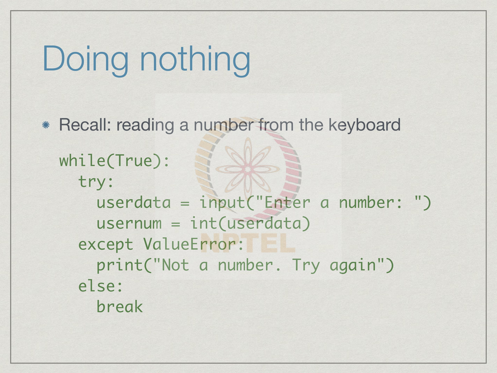
For the last lecture this week we look at some useful things which will crop up and
which do not fit anywhere else specific so we just combined a couple of them into this
one single presentation.
So, we had an example when we are doing the input and print about how to prompt the
user in case they had an invalid entry. We were trying to read a number and what we said
was that we would input some string that the user provides, so give them a message
saying enter the number they provide us with the string and then we try to convert it
using the int function. And this int function will fail if the user has provided a string
which is not a valid integer, in which case we will get a value error. And we get a value
error we print out a message saying try again and we go back.
Finally, if we succeed, that is this try succeeds the int works then we will exit from this
try block go to the else and the else will break out to of the loops. So, this we had already
seen. Now the question is, what if we want to change this so that we do nothing we do
not want to do this. In other words if the user does not present a valid value instead of
telling them why we just keep saying enter a number I mean we have seen this any
number of times right, you go to some user interface and you type something wrong it
does not tell you what is wrong it just keeps going back and back and back and asking to
type again. So, how would you actually program something as unfriendly as that?
What we want to say is, if I come to this value error do nothing. Now the Problem with
python is that wherever you put this kind of a colon it expects something after that, you
cannot have an empty block. So if I put a colon there must be at least one statement after
that. This is a syntactic rule of Python you cannot have an empty block. But here I want
to do nothing, I want to recognize there is a value error and then go back here that is fine,
but I do not want to do anything else.
How do I do nothing in Python? So the answer is, that there is a special statement called
pass. Pass is a statement which exists only to fill up spaces which need to be filled up. So
when you have blocks like except or else, if you put the block name there you cannot
leave it empty. In this case you can use the word pass in order to do nothing.
Supposing, I have a list and I want to remove an element from the middle of the list. So
one way to do this of course, is to take the slice up to that position this slice from that
position then glue them together using plus and so on. But what if I want to directly do
this. It turns out that that there is a command called del. If I say del l 4 and what it does is
effectively removes l 4 from the current set of values, and this automatically contracts
the list and shifts everything from position 5 on wards to the left by 5. So let us just
verify with this works the way it claims to work.
Supposing, we set our list to be the range of values from 0 to 10, 0 to 9 say, and now I
say del l 4 then l becomes 0, 1, 2, 3, 5, 6, 7, 8, 9, because l 4 was the value 4 remember
the position start from 0. And so it has actually deleted the value at the fourth position.
This also works for dictionaries. If we want to remove the value associated with the key
k then you can del d k and it will remove the key k and whatever values associated with
it and removal from it. So, the key will now it considered being an undefined key.
In general we can take a name like x and say del x and what this will do is make x
undefined. Supposing, you wrote some junk code like this we set x equal to 7 and then
we say del x, and then we ask y equal to x plus 5. Now this point since x has been
undefined even though it had a value of 7 this expression x plus 5 cannot be calculated
because x no longer has a value, and what you will end up with is error that we saw
before namely a name error saying that the name x is not defined.
How would you go about checking if a name is defined, well of course you could use
exception handling. Supposing, we want to assign a vale to a name x only if x is
undefined, then we can say try x so this is trying to do something with the x.
Remember that names can be anything, it could be functions. So, you can just write x
because if it is currently in name of a function which takes no arguments we will try to
execute that function, so it is perfectly valid to just write x. But x if it has no value it will
give a name error. So, you can say try x and if you happened to find a name error set it to
5 otherwise leave it untouched. If x already has a value this will do nothing to x, if x does
not have a value then it will update the value of x to 5.
Now, usually what happens is that we want to check whether something has been defined
or not so far. It is not a good idea to just leave it undefined and then use exception
handling to do it, because you might actually find strange things happening. So, Python
provides us with a special value called None with the capital N, which is the special
value used to define nothing - an empty value or a null value.
We will find great use for it later on when we are defining our own data structures, but
right now just think of none as a special value, there is only one value in none and it
denotes nothing. So, the typical use is that when we want to check whether name has a
valid value we can initialize it to none and later on we can check if it is still none. So,
initially we say x is equal to none and finally we go ahead and say, if x is not none then
set y equal to x, Another words y equal to x is will not be executed if x is still none.
Now, notice the peculiar word is not. So, we are using is not equal to. So there is exactly
one value none in Python in the space. All Nones point to the same thing. Remember was
checking when we say l 1 is l 2, we are checking whether l 1 and l 2 point to the same list
object. We were asking whether x and the constant none point to the same none object
and there is only one value none. So, x is none as the same as x equal to equal to none, so
x is not none is the same as x not equal to none. So, x is not none is much easier to read
the next not equal to none. That is why we will write it this say.
What we have seen our three useful things which we will use from time to time as we go
along. One is the statement pass which is the special statement that does nothing and can
be used whenever you need an empty block. Then we saw the command del which takes
the value and undefined it. The most normal way to use del is to remove something from
a list or a dictionary, you would not normally want to just undefine name which is
holding simple value.
But from a dictionary or a list we might want to remove a key or if might want to remove
a position and del is very useful for that. Finally, we have seen that there is a special
value none which denotes a null value, it is a unique null value and this can be used to
initialize variables to check whether they have been assigned sensible values later in the
code.